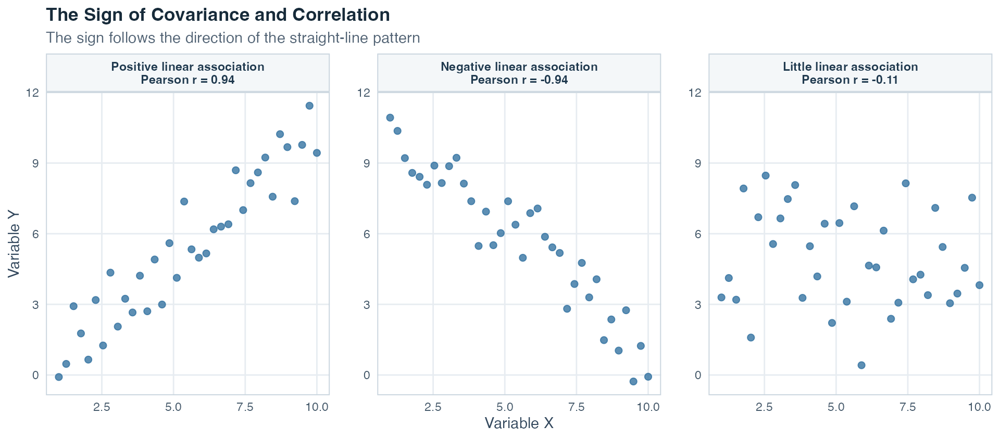
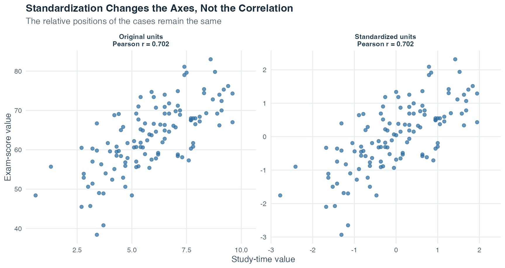
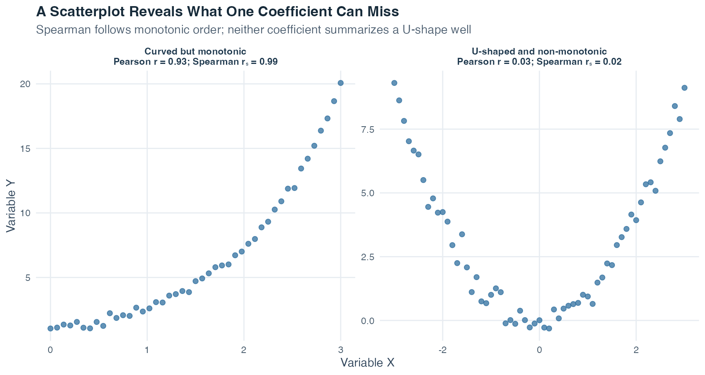
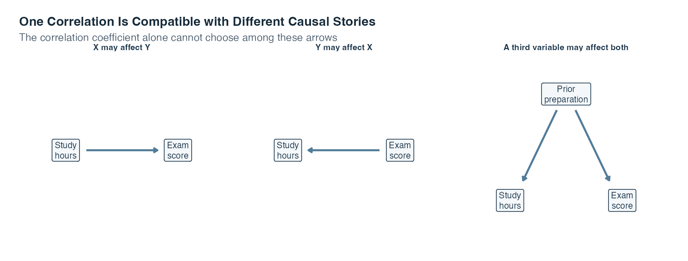

Exercise Sheet
Choose PDF for printing or Word for editing.
Introduction to Statistics · Topic 4
Topic 1 described one variable at a time, and Topic 3 used sample results to ask careful population questions. We now bring two quantitative variables into the same picture. Instead of asking only what study time looks like or what exam scores look like, we ask whether the two measurements have a pattern when they are recorded for the same cases.
Imagine placing one student’s weekly study time and exam score at a single point, then doing the same for every student. Would the points tend to rise together, fall together, or form no clear straight-line pattern? Could one unusual point change the impression? These questions matter because many research questions begin with whether two measured quantities vary together before moving to prediction or more complex models.
When higher values of one variable tend to occur with higher or lower values of another, the variables show an association. Association means a pattern of joint variation. It does not yet say why the pattern exists. A third variable, the direction of influence, or the way the variables were measured may still matter.
The starting point is a scatterplot, a graph in which each point represents one case. The point’s horizontal position shows that case’s value on one variable, and its vertical position shows the value on the other variable. Because both coordinates belong to the same case, the observations are paired.
This topic develops two numerical summaries of a scatterplot. Covariance records the direction in which two quantitative variables vary together. Correlation standardizes that joint variation so its direction and linear strength can be compared across measurement units. The goal is not to replace the graph with a coefficient. It is to learn how the picture and the number support one careful description.
Guiding question: When two quantities change together, how can we describe the pattern without confusing association with causation?
A coefficient compresses an entire scatterplot into one number. Always inspect the plotted pairs first, because one number can hide a curve, a narrow observed range, separate groups, or an unusual point.
By the end of this topic, you should be able to:
Variance begins with one variable. For each value \(x_i\), it measures the deviation \(x_i-\bar{x}\) from the sample mean and squares that deviation. Covariance extends the same idea to two variables. For each paired case \(i\), it multiplies the deviation on \(X\) by the deviation on \(Y\):
\[ s_{xy}=\frac{1}{n-1}\sum_{i=1}^{n}(x_i-\bar{x})(y_i-\bar{y}). \]
Read the formula one step at a time:
The sign of each cross-product has a direct interpretation. A case that lies above both means has two positive deviations, so its product is positive. A case below both means has two negative deviations, whose product is also positive. A case above one mean but below the other has deviations with opposite signs, so its product is negative.
The following newly authored five-case calculation keeps every contribution visible. Both sample means equal 3.
| Case | x | y | x - mean(x) | y - mean(y) | Cross-product |
|---|---|---|---|---|---|
| 1 | 1 | 2 | -2 | -1 | 2 |
| 2 | 2 | 3 | -1 | 0 | 0 |
| 3 | 3 | 1 | 0 | -2 | 0 |
| 4 | 4 | 5 | 1 | 2 | 2 |
| 5 | 5 | 4 | 2 | 1 | 2 |
| Sum | 15 | 15 | 0 | 0 | 6 |
The cross-products sum to 6. With \(n=5\), the sample covariance is
\[ s_{xy}=\frac{6}{5-1}=1.50. \]
The positive result tells us that larger \(x\) values tend to occur with larger \(y\) values in this small dataset. The value 1.50 does not yet have a unit-free meaning, so it should not be read as a universal measure of strength.
The table shows the arithmetic row by row. The next figure shows where the signs of those cross-products come from geometrically.
![A scatterplot of five cases is divided by dashed mean lines at x bar equals 3 and y bar equals 3. The upper-right and lower-left regions represent positive covariance contributions because both values lie on the same side of their means. The other two regions represent negative contributions, although no worked case lies there. A table lists both signed deviations and the contribution for every case. Case 5 is traced two units right and one unit up from the mean intersection, giving a contribution of positive two.](t04_cov-corr_files/figure-html/fig-covariance-geometry-1.png)
The dashed vertical line marks \(\bar{x}=3\), and the dashed horizontal line marks \(\bar{y}=3\). Read each region in words. In the upper-right and lower-left regions, both values lie on the same side of their means, so the case contributes positively. In the other two regions, the values lie on opposite sides of their means, so the case would contribute negatively. No point in this five-case dataset lies in a negative region, but the shaded regions show where a negative contribution would come from.
Case 5 shows the calculation. Start where the two mean lines meet. Move 2 units right to \(x_5=5\), so \(x_5-\bar{x}=+2\). Then move 1 unit up to \(y_5=4\), so \(y_5-\bar{y}=+1\). Multiplying the two signed deviations gives \((+2)(+1)=+2\). The table reports the same three quantities for every case. Cases 2 and 3 contribute zero because one coordinate lies exactly on its mean, making one deviation zero.
The background regions determine only whether a contribution is positive or negative. The distances from the mean lines determine its size: farther points can contribute a product with a larger absolute value. Covariance adds the five contributions, \(2+0+0+2+2=6\), and then divides by \(n-1\). Positive and negative contributions can offset one another in other datasets. The figure describes joint positions relative to the means and makes no causal claim.

Read each framed panel as its own scatterplot. Its visible y-axis repeats the vertical reference, so you do not have to carry the first panel’s axis mentally across the whole row. In the first panel, most cases are above both means or below both means, so positive products dominate. In the second panel, many cases are above one mean and below the other, so negative products dominate. In the third, positive and negative products nearly balance, leaving little linear association. The repeated axes separate the three patterns while all panels retain the same variables and scales.
Covariance has two important properties. First, it is symmetric: \(s_{xy}=s_{yx}\). Swapping which variable is written first does not change the result. Second, its size depends on the units of both variables. Converting hours to minutes multiplies the covariance by 60 even though the point pattern has not substantively changed. This unit dependence motivates correlation.
The Pearson correlation coefficient standardizes covariance by the sample standard deviations of both variables:
\[ r_{xy}=\frac{s_{xy}}{s_xs_y}. \]
It is also called the Bravais-Pearson correlation or product-moment correlation. On this site, we usually write Pearson’s r.
The denominator \(s_xs_y\) removes the original units. Pearson’s \(r\) is therefore unitless and always lies between \(-1\) and \(+1\):
The sign gives direction. The absolute value \(|r|\), meaning the distance of \(r\) from zero without its sign, describes how closely the points follow a straight-line pattern. Values nearer 1 in absolute value indicate a tighter linear pattern. Values nearer 0 indicate a weaker linear pattern.
Do not turn that continuum into automatic labels such as “weak,” “moderate,” or “strong” without context. The practical importance of a correlation depends on what was measured, measurement quality, the consequences of the decision, and the scientific question. A numerically small association may matter in one setting, while a larger one may be unimportant in another.
Pearson’s \(r\) is symmetric like covariance: \(r_{xy}=r_{yx}\). It describes association, not an outcome-predictor direction. Changing the origin of a scale or converting to another positive unit leaves \(r\) unchanged. If a scale is deliberately reversed with a negative multiplier, the sign of \(r\) reverses because the meaning of high and low values has reversed.
Topic 1 introduced the z-score. For a sample value, \(z_{xi}=(x_i-\bar{x})/s_x\) expresses its position in standard-deviation units. The corresponding value for \(Y\) is \(z_{yi}=(y_i-\bar{y})/s_y\).
Pearson’s correlation can be written as the covariance of those standardized values:
\[ r_{xy}=\frac{1}{n-1}\sum_{i=1}^{n}z_{xi}z_{yi}. \]
The connection is exact because each standardized variable has sample mean 0 and sample standard deviation 1. Standardization changes the axis units, but it preserves every case’s relative position and the linear point pattern.

The left and right panels contain the same cases. Only the labels on the axes change. This is why correlation, unlike covariance, can compare the linear strength of variables measured in different units.
An alternative calculation from raw sums. A direct hand-calculation route is useful when a question gives the sums of \(X\), \(Y\), their squares, and their cross-products. We can keep the expression readable by building it in pieces. First calculate the joint part
\[ A=n\sum x_i y_i-(\sum x_i)(\sum y_i). \]
Then calculate one separate-variation part for each variable:
\[ B_X=n\sum x_i^2-(\sum x_i)^2, \qquad B_Y=n\sum y_i^2-(\sum y_i)^2. \]
Finally combine them:
\[ r=\frac{A}{\sqrt{B_XB_Y}}. \]
\(A\) records joint variation. \(B_X\) and \(B_Y\) scale that joint variation by the separate variation in the two variables. For the five-case table above, \(n=5\), \(\sum x=15\), \(\sum y=15\), \(\sum x^2=55\), \(\sum y^2=55\), and \(\sum xy=51\). Therefore
\[ A=5(51)-(15)(15)=30, \]
\[ B_X=B_Y=5(55)-15^2=50, \]
and
\[ r=\frac{30}{\sqrt{50\times50}}=0.60. \]
This multi-step route is an algebraically rearranged version of the same Pearson correlation calculation and reaches the same coefficient. On a first reading, focus on what the joint and separate-variation parts do. The arithmetic becomes easier once that structure is familiar.
At this stage, Pearson’s \(r\) is interpreted directly. The formal proportion-of-variation interpretation arrives with the regression model in Topic 5. We therefore do not treat \(r^2\) as a percentage caused by one variable here. Squaring a correlation never turns an observational association into a causal explanation.
Pearson’s \(r\) is designed to summarize a linear association, meaning a pattern that can be represented reasonably by a straight line. The calculation itself can produce a number for many datasets, but the number is only a useful summary when the plotted pairs support that interpretation.
Check five features before reporting Pearson’s \(r\):
These checks are about interpretation, not cosmetic presentation. Removing an inconvenient point merely to increase \(r\) is not justified. Investigate whether the value is an error, a valid unusual case, or evidence that a single linear summary is inadequate. The simulated example below makes the outlier and range-restriction effects visible.
Two variables are independent when knowing the value of one provides no information about the distribution of the other. When the required means and variances exist, independence implies zero covariance and therefore zero Pearson correlation. The reverse statement is false.
Pearson’s \(r=0\) means only that the positive and negative contributions to the linear pattern balance. A U-shaped association can be perfectly systematic while its Pearson correlation is near zero. Always look at the scatterplot before translating \(r=0\) into “no relationship.”
This limitation leads naturally to a second coefficient. Pearson summarizes a straight-line pattern. Spearman summarizes whether the ordering of one variable tends to move consistently with the ordering of the other.
The Spearman rank correlation, written \(r_s\), is Pearson’s correlation applied to ranks rather than to the original values. A rank records a value’s ordered position. The smallest value receives rank 1, the next receives rank 2, and so on.
Spearman’s \(r_s\) describes a monotonic association. Monotonic means that \(Y\) tends to move in one consistent direction as \(X\) increases:
If several cases have the same value, they form a tie. Each tied case receives the average of the ranks those cases would have occupied. For example, two values tied for positions 2 and 3 both receive rank 2.5. Software uses these average ranks when it calculates the general Spearman correlation.
When there are no ties, a convenient shortcut is available:
\[ r_s = 1- \frac{6\sum_{i=1}^{n}d_i^2}{n(n^2-1)}, \]
where \(d_i=\operatorname{rank}(x_i)-\operatorname{rank}(y_i)\) is the difference between case \(i\)’s two ranks. Small rank differences keep \(r_s\) near \(+1\), whereas large disagreements between the two orderings reduce it. With ties, use Pearson’s correlation applied to the average ranks rather than treating this shortcut as exact.

The left panel rises continuously but bends. Its ranks remain almost perfectly ordered, so Spearman is near 1, while Pearson is lower because the pattern is not straight. The right panel first falls and then rises. That U-shape is not monotonic, so neither coefficient summarizes it well even though the plot shows a strong relationship.
| Question | Pearson’s \(r\) | Spearman’s \(r_s\) |
|---|---|---|
| What pattern is summarized? | Linear association | Monotonic association |
| What values are correlated? | Original quantitative values | Separate ranks of the two variables |
| Minimum measurement level used here | Metric | Ordinal |
| Sensitivity to outliers | Can be highly sensitive | Usually less sensitive because ranks limit numerical distance |
| Does zero prove independence? | No | No |
Read the table by columns rather than by choosing a universally “better” coefficient. Pearson keeps the original quantitative distances and asks how closely the cases follow a straight line. Spearman replaces values with ranks and asks whether their order moves consistently upward or downward. The last row is deliberately identical: neither a zero Pearson coefficient nor a zero Spearman coefficient proves that the variables are independent.
Spearman is not an automatic repair for every difficult scatterplot. It still misses non-monotonic patterns, can be affected by unusual rank configurations, and does not establish causation. Choose it because the scale level and pattern justify a rank-based monotonic summary, not because it produces a preferred number.
The sample coefficient \(r\) describes the observed paired cases. The Greek letter \(\rho\) (rho) denotes the Pearson correlation in the population. The test used here asks whether an observed sample correlation is compatible with the null hypothesis
\[ H_0:\rho=0, \]
meaning that the population has no linear Pearson correlation. For a two-sided question, the alternative is \(H_1:\rho\neq0\). The test statistic is
\[ t=\frac{r\sqrt{n-2}}{\sqrt{1-r^2}}, \qquad df=n-2. \]
Here, \(n\) is the number of paired cases and \(df\) means degrees of freedom, the reference-distribution quantity used to find the p-value. Topic 3 introduced the p-value as the probability, under the null model, of a result at least as incompatible with \(H_0\) as the observed result. The direction of the alternative hypothesis determines whether a one-sided or two-sided reference area is used.
The test does not replace the scatterplot. It is designed for the linear Pearson question and relies on the sampling and measurement conditions behind that question. Paired cases must be independent of other paired cases, the observations must support a linear summary, and influential outliers or design problems can invalidate a simple interpretation.
Most importantly, statistical significance is not association strength. With a very large sample, a small \(r\) can produce a small p-value. With a very small sample, even a large observed \(r\) may remain uncertain. Report \(r\), \(n\), the direction of the test, and the inferential result separately, then discuss practical importance in the study’s context.
A causal claim says that changing one variable would change another. A correlation alone does not justify that claim, especially when the data come from an observational study, a study in which researchers measure variables without assigning the conditions being compared.
Two problems remain after an association is observed:

The first panel shows the causal direction people may have in mind when they see the correlation. The second reverses that arrow and is equally compatible with a symmetric coefficient. The third introduces prior preparation as a common cause of both measured variables, which can create an association even without a direct arrow between study time and score. The scatterplot and \(r\) alone cannot select among these explanations.
The same logic applies beyond the teaching variables in the diagram. Suppose brain structure and alcohol dependence are correlated. The association alone cannot tell us whether structural differences contributed to dependence, dependence contributed to later structural differences, or both processes occurred. As a second example, reading to children may be associated with their later occupational outcomes, while parental education is related to both how often reading occurs and which educational opportunities the child later receives. These examples do not prove any one causal story. They show why a plausible alternative direction or common cause must be considered before causal language is used.
A longitudinal design measures variables at multiple times and can help establish which change came first, although timing alone does not remove every alternative explanation. A randomized controlled experiment assigns conditions by chance and holds other procedures as constant as possible. When feasible and ethical, random assignment is a stronger basis for a causal conclusion than an observational correlation.
Use the same order each time:
The workflow moves from a visible pattern to a numerical summary and only then to inference. That order makes it harder for one attractive coefficient to hide a problem in the data.
We now apply the complete workflow to a reproducible teaching dataset. Reproducible means that the same instructions and fixed seed recreate the same values whenever the page is built, even though the recipe mimics chance variation. Topic 1 introduced simulations and fixed seeds. No real student was measured here.
A rising cloud of points can look persuasive, but a responsible analysis asks what the pattern actually supports before compressing it into one coefficient. In this constructed cohort, meaning the 120 artificial cases studied together, our central question is:
How are weekly study hours and exam scores associated?
Three smaller questions guide the answer. Does the scatterplot show a roughly straight pattern rather than a curve or separate groups? Do Pearson’s and Spearman’s coefficients tell a similar story for these data? How much can one unusual point or a restricted study-time range change the numerical summary? These are descriptive and inferential questions about an association. They do not ask whether increasing a real student’s study time would cause a particular score change.
The simulation recipe creates three quantitative variables:
This recipe deliberately includes prior preparation as a third variable. It lets us see why a study-time and exam-score correlation cannot, by itself, isolate a causal effect.
| Variable | Meaning in the simulation | Role in this example |
|---|---|---|
participant_id |
Anonymous row label | Identifies paired values; not a quantity to average |
prior_preparation |
Constructed 0 to 100 preparation score | Known third variable in the data-generating recipe |
study_hours |
Constructed weekly study time | First variable in the correlation |
exam_score |
Constructed exam result from 0 to 100 | Second variable in the correlation |
The table separates bookkeeping from analysis. participant_id keeps each row identifiable but has no quantitative interpretation. The next three columns are numerical, yet they play different roles: prior preparation is a known third variable in the recipe, while study hours and exam score form the paired variables whose covariance and correlations we calculate. Keeping those roles visible prevents an identifier or an explanatory background variable from being treated as though it were one of the target measures.
The analysis proceeds from rows to scatterplot, covariance, Pearson and Spearman coefficients, inference, and diagnostic checks.
Step 1: Inspect the Paired Rows
Each row must keep the three measurements for one case together. Sorting one column without the others would destroy the pairing and create a meaningless correlation. The interactive table contains all 120 rows. Use the search field, column sorting, and page controls to inspect the constructed cases while preserving each row’s pairing.
The full cohort contains 120 paired cases. Observed study time ranges from 0.6 to 9.6 hours per week, and exam scores range from 38.4 to 83.0. These are generated ranges, not estimates about real students.
With the pairing verified, the next step is to inspect all pairs at once.
Step 2: Plot Before Calculating
The point cloud rises from left to right, so the association is positive. The pattern is reasonably straight, although the points do not lie on one perfect line. The red line serves only as a visual guide to the linear direction. Topic 5 develops the formal regression line.
| Quantity | Value |
|---|---|
| Number of paired cases | 120 |
| Mean weekly study hours | 5.89 |
| SD of weekly study hours | 1.90 |
| Mean exam score | 63.33 |
| SD of exam score | 8.50 |
| Sample covariance | 11.365 |
| Pearson correlation | 0.702 |
| Spearman rank correlation | 0.706 |
Read the summary in three blocks. The number of paired cases confirms the sample size used by every coefficient. The two means and standard deviations describe each variable separately. Covariance, Pearson’s \(r\), and Spearman’s \(r_s\) then describe the variables together. Covariance retains the original hour-point units, Pearson standardizes the linear pattern, and Spearman summarizes the ordering of the cases.
Pearson’s \(r=0.702\) describes a substantial positive linear association in this constructed cohort. The word “substantial” refers to the visible point pattern and this teaching context, not to a universal numerical cutoff.
Step 3: See How the Covariance Is Built
A cross-product multiplies one case’s study-time deviation by that same case’s exam-score deviation. The next table shows the first eight cross-products. The full covariance uses the same calculation for all 120 cases.
| Participant ID | Study hours | Exam score | Study deviation | Score deviation | Cross-product |
|---|---|---|---|---|---|
| S001 | 9.0 | 66.2 | 3.11 | 2.87 | 8.92 |
| S002 | 6.0 | 73.4 | 0.11 | 10.07 | 1.06 |
| S003 | 0.6 | 48.4 | -5.30 | -14.93 | 79.04 |
| S004 | 4.3 | 58.5 | -1.59 | -4.83 | 7.70 |
| S005 | 7.1 | 58.4 | 1.21 | -4.93 | -5.94 |
| S006 | 3.4 | 38.4 | -2.49 | -24.93 | 62.19 |
| S007 | 7.7 | 68.0 | 1.81 | 4.67 | 8.43 |
| S008 | 8.1 | 68.4 | 2.20 | 5.07 | 11.18 |
The middle two deviation columns show where each displayed case sits relative to the two sample means. The final column multiplies those deviations. A positive cross-product places the case on the same side of both means, whereas a negative cross-product places it on opposite sides. The table displays only eight rows for readability, so its visible cross-products must not be added to reproduce the full covariance.
Cases above both sample means or below both means contribute positive products. Cases on opposite sides of the two means contribute negative products. Across the full cohort, the positive contributions dominate, producing
\[ s_{xy}=11.365\ \text{hour-points}. \]
The unit “hour-points” reminds us that covariance depends on both measurement scales. We now remove those units with Pearson’s correlation.
Step 4: Standardize the Covariance
For the full cohort,
\[ r=\frac{s_{xy}}{s_xs_y} =\frac{11.365}{(1.905)(8.502)} \approx 0.702. \]
Converting study time from hours to minutes changes the covariance but not the correlation:
| Measurement units | Covariance | Pearson r |
|---|---|---|
| Study hours and score points | 11.365 | 0.702 |
| Study minutes and score points | 681.876 | 0.702 |
Compare the table row by row. The first row measures study time in hours. The second multiplies every study-time value by 60 and therefore measures the same cases in minutes. That conversion multiplies the covariance by 60 because its units changed, while Pearson’s \(r\) remains fixed because standardization removes that unit change.
The covariance in minutes is 60 times the covariance in hours. Both correlations equal 0.702 after rounding because the cases retain the same relative positions.
The standardized covariance gives the same result:
\[ s_{z_xz_y}=0.702=r. \]
This numerical equality is the standardization link developed in the Theory tab.
Step 5: Compare Pearson and Spearman
The constructed variables contain rounded values, so some cases have tied study hours or exam scores. Spearman’s method assigns average ranks to those ties and correlates the ranks. It gives
\[ r_s=0.706. \]
Pearson’s \(r=0.702\) and Spearman’s \(r_s=0.706\) are close here. That agreement is consistent with the scatterplot’s mostly monotonic, roughly linear pattern. Monotonic means that the values tend to move in one direction as the other variable increases, even if the pattern is not perfectly straight. It is not a rule that the two coefficients must agree in every dataset.
Step 6: Test the Population Correlation Hypothesis
The symbol \(\rho\) (rho) denotes the Pearson correlation in the population represented by the inferential model. Suppose the inferential question is two-sided:
\[ H_0:\rho=0 \qquad\text{versus}\qquad H_1:\rho\neq0. \]
Substituting the sample correlation and sample size gives
\[ t=\frac{0.7017\sqrt{120-2}}{\sqrt{1-0.7017^2}} \approx 10.70, \qquad df=118. \]
Here, \(df\) means degrees of freedom and determines the shape of the reference t distribution. The two-sided p-value is less than 0.001. Under the test assumptions, this result is difficult to reconcile with a population Pearson correlation of exactly zero.
That sentence is intentionally narrower than “there is an important effect” or “study time causes exam performance.” The test addresses compatibility with \(\rho=0\). Association strength comes from \(r\) and the scatterplot. Practical importance requires subject-matter context. Causation requires a suitable design.
Step 7: Check Sensitivity to One Point and to the Observed Range
Sensitivity describes how much a result changes when one feature of the analyzed data changes. First, add one deliberately unusual teaching point without changing the original cohort. A point is influential when including it noticeably changes the fitted numerical result.
The original correlation is about 0.70. After the illustrative point is added, it is about 0.47. The calculation is not wrong in either panel. The data question has changed, which is why the point must be investigated rather than silently removed.
Now compare the full observed study-time range with only cases between 5 and 8 hours. This is range restriction: the analysis uses only a narrower portion of the values that were originally observed.
The restricted subset contains 65 cases and has \(r=0.330\). The narrower horizontal range makes it harder for a straight-line pattern to separate itself from case-to-case variation. The smaller coefficient describes a different set of observed cases and therefore does not contradict the full-cohort result.
Step 8: State What the Correlation Cannot Establish
The simulation recipe is known to us. Prior preparation contributes to both study time and exam score, while study time also contributes to the generated score. If we pretended that prior preparation did not exist, the study-time and score correlation would combine more than one path.
A real observational study does not reveal its data-generating recipe. The correlation therefore cannot tell us how much of the pattern reflects study time, prior preparation, another unmeasured variable, reverse direction, or measurement choices. A stronger causal claim would require a design that addresses those alternatives.
The simulation lets us inspect the known third variable directly. The two panels below ask separate questions: does prior preparation vary with study time, and does it also vary with exam score?
In the first panel, higher prior-preparation scores tend to occur with more weekly study time. In the second panel, higher prior-preparation scores also tend to occur with higher exam scores. The same participant identifier appears in both hover labels, so you can trace one artificial case across the two relationships. This visible two-path pattern explains why the study-time and exam-score correlation combines more than one source of joint variation. The adjustment itself is introduced later when we calculate a partial correlation.
In this constructed cohort, weekly study time and exam score have a positive, roughly linear association. Pearson and Spearman give similar coefficients, and the Pearson test rejects \(H_0:\rho=0\) under its assumptions. These statements describe the generated data and the stated inferential model. They do not describe real students and do not establish that changing study time would cause a specific score change.
This example is cleaner than real research. It has complete paired values, known measurement rules, a fixed recipe, and one deliberately visible third variable. Real data may contain missing pairs, measurement error, multiple subgroups, nonlinear patterns, and unusual cases whose origins are unclear.
The example followed the Theory section’s full reading sequence. We protected the row pairing, inspected the scatterplot, used paired deviations to calculate covariance, standardized that joint movement with Pearson’s correlation, and compared the result with the rank-based Spearman coefficient. The population test then addressed compatibility with \(\rho=0\), while the unusual-point and restricted-range displays showed why a coefficient must be interpreted alongside the data pattern that produced it.
Correlation has now given us a compact description of a linear relationship. It tells us whether two quantitative variables tend to move in the same direction or in opposite directions, and how closely their points follow a straight-line pattern. Because correlation is unit-free, the value is unchanged if study time is converted from hours to minutes or exam scores are expressed on another linear scale. It is also symmetric: the correlation between study time and exam score is the same as the correlation between exam score and study time. At this stage, neither variable has been assigned a special role.
The next question is directional. Suppose we want to use study time to predict an exam score. We must now name study time as the predictor and exam score as the outcome. Reversing those roles would answer a different prediction question. Topic 5 turns the cloud of points into a fitted line that expresses the predicted outcome in the variables’ original units. Instead of stopping at a unit-free statement such as “the association is positive,” we can ask how many score points the fitted model predicts will change when study time increases by one hour.
That fitted line will give every case a fitted value, which is the outcome value predicted by the line for that case’s predictor value. The vertical difference between the observed outcome and its fitted value is called a residual. Residuals show what the line misses, so they help us judge whether a straight-line model summarizes the pattern well and whether unusual cases need attention.
Topic 5 develops this next step carefully. It keeps the scatterplot and correlation as the starting point, then adds the predictor-outcome direction, the fitted line in original units, fitted values, residuals, and an honest account of what prediction still cannot establish about causation.
Choose PDF for printing or Word for editing.
Choose PDF for printing or Word for editing.
Covariance and correlation describe how two quantitative variables vary together across correctly paired cases. Always inspect the scatterplot first. A coefficient is a summary of that plot, not a replacement for it.
For paired observations \((x_i,y_i)\), sample covariance is
\[ s_{XY}=\frac{\sum_{i=1}^{n}(x_i-\bar{x})(y_i-\bar{y})}{n-1}. \]
Products are positive when both deviations point in the same direction and negative when they point in opposite directions. The sign therefore records direction. Its size depends on the measurement units, which makes covariances difficult to compare across scales.
Pearson’s correlation standardizes the covariance:
\[ r=\frac{s_{XY}}{s_Xs_Y}. \]
It lies between \(-1\) and \(+1\). The sign gives the direction of the linear pattern, and \(|r|\) describes how closely the points follow a straight line. A value near zero means little linear association; a strong curved pattern can still have a small Pearson correlation.
| Check | Why it matters |
|---|---|
| Paired rows | Each \(x_i\) must stay with its own \(y_i\) |
| Scatterplot shape | Pearson’s \(r\) summarizes linear association, not every form of dependence |
| Unusual and influential points | One point can change the coefficient substantially |
| Observed range | Restricting either variable’s range can weaken the observed coefficient |
| Subgroups | A combined pattern can hide different patterns within groups |
| Measurement and sampling | Error, selection, and poor coverage can distort the relationship |
Spearman’s rank correlation applies Pearson’s idea to ranks. It describes a monotonic pattern, meaning that one variable tends to move consistently upward or downward as the other changes, without requiring a straight line. Tied values receive appropriate shared ranks.
For inference about a population Pearson correlation under the model used here,
\[ t=r\sqrt{\frac{n-2}{1-r^2}}, \qquad df=n-2. \]
The test asks whether the population linear correlation could be zero under the stated assumptions. It does not turn an observational association into a causal effect.
Correlation is symmetric and unit-free. Simple regression keeps the same paired pattern but gives the variables different roles: one becomes the predictor and the other the outcome. Topic 5 turns the point cloud into a fitted line, restores original units, and studies the residuals that show what the line misses.